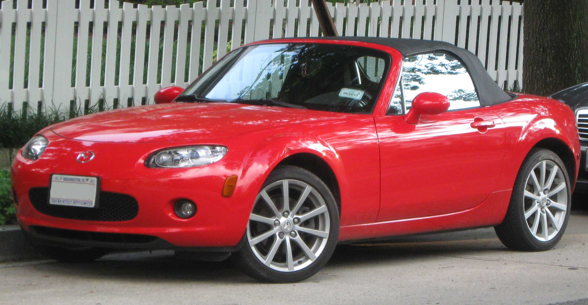
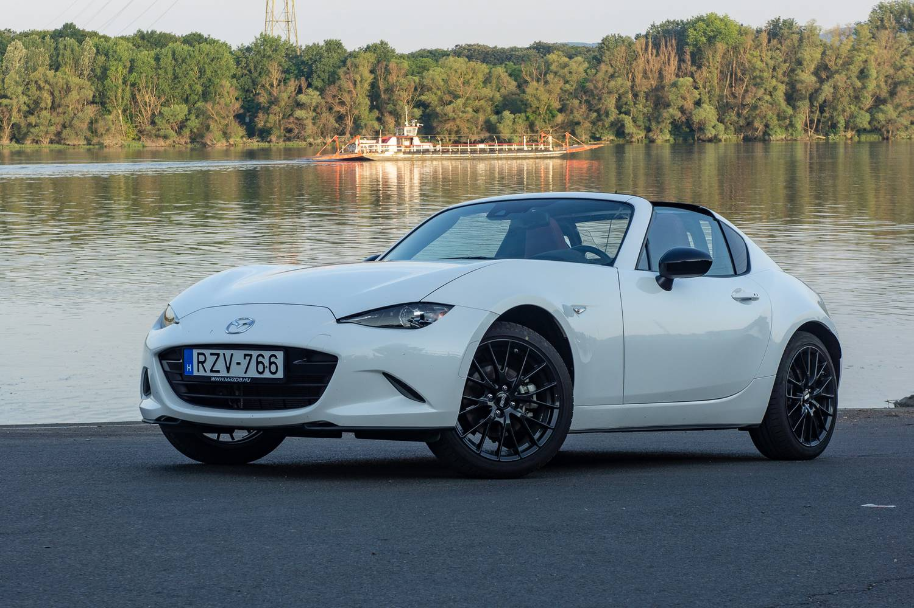

A harmadik generációt új, erősebb motorokkal mutatják be, amelyek továbbra is növekvő merevséggel rendelkeznek, és a kiegészítő felszerelések ellenére is, különösen a biztonság területén, amelynek súlya csak tíz kilóval nő. Bár jelen van más piacokon, a Mazda Europe nem hajlandó olyan gyakorlati lehetőségeket kínálni az európai piacon, mint a sebességkorlátozó és az automata sebességváltó (6 fokozat). A motor vagy 1,8 L 126 LE, vagy 2,0 L 160 LE . De a nagy újdonság az 3 rd generáció az, hogy amellett, hogy a vászontető változat, van is egy kemény top változata, amely lehet húzni elektromosan a boot amely, ha egyszer felszerelt, átalakítja az átalakítható egy elegáns kupé. Az első különleges sorozat az NC modell PFS 3 th generációs felszerelt 2,0 literes motor, egyedi kerekek, a bőrkárpit piros, festék „sebesség piros” és az összes lehetőséget nyújtson a 2.0 L.
A Mazda MX-5 ND, a Mazda roadster negyedik generációja, amelyet a 2015. szeptemberi Genfi Nemzetközi Autószalonon mutattak be . Ez választották „ Világ Év Autója 2016” a New York-i Autószalonon a2016. március. A japán gyártó gyakran mondta, hogy amikor Henry Ford levette a kalapját, amikor meglátta az Alfa Romeót , megtiszteltetésnek tartja, hogy egy napon együtt dolgozhat a milánói gyártóval. Az aláírt protokollnak köszönhetően2012. május 23, kívánságait teljesítették. Hivatalosan aláírták a Fiat SpA csoport és a Mazda közötti együttműködési megállapodást2013. január 18amelyen a két gyártó ötvözi tehetségét az MX-5 új generációjának létrehozásához az Alfa Romeo segítségével. Ennek a tanulmánynak két olyan autót kellene vezetnie, amelyek ugyanazon a platformon alapulnak, de meghatározott karosszériákkal és motorokkal.2015. március, A Fiat bejelenti, hogy a közösen tervezett modell nem az Alfa Romeo nevet viseli, hanem a Fiat, amely egy erősebb verziót tervez építeni az Abarth márkanév alatt , ez a Fiat 124 Spider lesz . Az új MX-5 az olasz modell előtt kerül bemutatásra.
